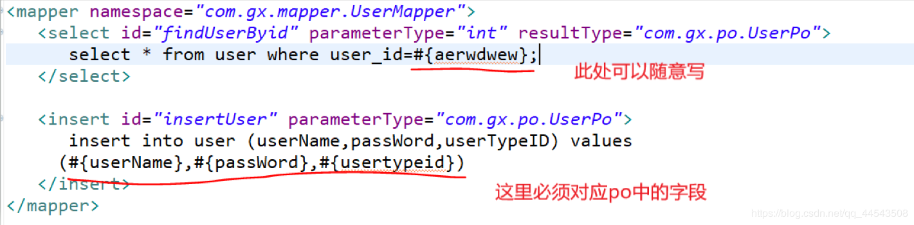
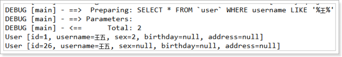

原文连接:https://www.cnblogs.com/yichunguo/p/11991027.html
前言
在开发中使用Mybatis经常使用到#{}与${}，依旧有很多开发者对二者的使用不是很清晰，正所谓好记性不如烂笔头，特此总结一下。
在mybatis中动态 sql 是其主要特性之一，在 mapper 中定义的参数传到 xml 中之后，在执行操作之前 mybatis 会对其进行动态解析。mybatis 提供了两种支持动态 sql 的语法：#{} 以及 $ {}，其最大的区别则是#{}方式能够很大程度防止sql注入(安全)，${}方式无法防止Sql注入。什么？？不懂什么是Sql注入？额。。。Sql注入指的是程序解析时会将你传入的参数作为原来SQL语句的一部分，打乱原来SQL的结构，而通常我们只是需要传入一个参数而已.
彻底理解SQL注入
什么？还不懂SQL注入，我湖了QAQ。。。那就来个最简单的例子：一般开发，肯定是在前台有两个输入框，一个用户名，一个密码，会在后台里，读取前台传入的这两个参数，拼成一段SQL，例如： select count(1) from tab where usesr=userinput and pass = passinput,把这段SQL连接数据后，看这个用户名/密码是否存在，如果存在的话，就可以登陆成功了，如果不存在，就报一个登陆失败的错误。对吧。
但是有这样的情况，这段SQL是根据用户输入拼出来，如果用户故意输入可以让后台解析失败的字符串，这就是SQL注入，例如，用户在输入密码的时候，输入 '''' ' or 1=1'', 这样，后台的程序在解析的时候，拼成的SQL语句，可能是这样的： select count(1) from tab where user=userinput and pass='' or 1=1; 看这条语句，可以知道，在解析之后，用户没有输入密码，加了一个恒等的条件 1=1，这样，这段SQL执行的时候，返回的 count值肯定大于1的，如果程序的逻辑没加过多的判断，这样就能够使用用户名 userinput登陆，而不需要密码。
防止SQL注入，首先要对密码输入中的单引号进行过滤，再在后面加其它的逻辑判断，或者不用这样的动态SQL拼
关于 # { }
1、#{}表示一个占位符号 相当于
jdbc中的 ? 符号
#{}实现的是向prepareStatement中的预处理语句中设置参数值，sql语句中#{}表示一个占位符即?
2、#{}将传入的数据都当成一个字符串，会对自动传入的数据加一个双引号。如：
select * from user where id= #{user_id}，如果传入的值是11,那么解析成sql时的值为where id="11"，
3、如果sql语句中只有
一个参数,此时参数名称可以随意定义
如果sql语句有多个参数,此时参数名称应该是与当前表关联[实体类的属性名]或则[Map集合关键字]，不能随便写，必须对应！如下图

关于$ { }
1、$ {}将传入的数据直接显示生成在sql中。如：
select * from user where id= $ {user_id}，如果传入的值是11,那么解析成sql时的值为where id=11
2、
$ {value}中value值有限制只能写对应的value值不能随便写，因为${}不会自动进行jdbc类型转换
3、简单来说,在
JDBC不支持使用占位符的地方,都可以使用${}
Mybatis中#{}与${}的区别
简单来说区别就是
#{}方式能够很大程度防止sql注入(安全)，${}方式无法防止Sql注入
在
JDBC能使用占位符的地方,最好优先使用#{}
在
JDBC不支持使用占位符的地方,就只能使用${}，典型情况就是 动态参数
比如 有两张表,分别是emp_2017 和 emp_2018 .如果需要在查询语句中 动态指定表名,就只能使用${}
<select>
select * from emp_ ${year}
<select>再比如MyBatis 排序时使用order by 动态参数时,此时也只能使用${}
<select>
select * from dept order by ${name}
</select>代码案例
一般# {}与$ {}用的比较多的地方是模糊查询方面，所以下面来一个模糊查询的案例
使用#{}案例
1、映射文件
在User.xml配置文件中添加如下内容：
<!-- 如果返回多个结果，mybatis会自动把返回的结果放在list容器中 -->
<!-- resultType的配置和返回一个结果的配置一样 -->
<select id="queryUserByUsername1" parameterType="string"
resultType="cn.itcast.mybatis.pojo.User">
SELECT * FROM `user` WHERE username LIKE #{username}
</select>2、测试程序
MybatisTest中添加测试方法如下：
@Test
public void testQueryUserByUsername1() throws Exception {
// 4. 创建SqlSession对象
SqlSession sqlSession = sqlSessionFactory.openSession();
// 5. 执行SqlSession对象执行查询，获取结果User
// 查询多条数据使用selectList方法
List<Object> list = sqlSession.selectList("queryUserByUsername1", "%王%");
// 6. 打印结果
for (Object user : list) {
System.out.println(user);
}
// 7. 释放资源
sqlSession.close();
}测试效果如下图：

使用$ {}案例
1、映射文件：
在User.xml配置文件中添加如下内容：
<!-- 如果传入的参数是简单数据类型，${}里面必须写value -->
<select id="queryUserByUsername2" parameterType="string"
resultType="cn.itcast.mybatis.pojo.User">
SELECT * FROM `user` WHERE username LIKE '%${value}%'
</select>
2.测试程序：
MybatisTest中添加测试方法如下：
@Test
public void testQueryUserByUsername2() throws Exception {
// 4. 创建SqlSession对象
SqlSession sqlSession = sqlSessionFactory.openSession();
// 5. 执行SqlSession对象执行查询，获取结果User
// 查询多条数据使用selectList方法
List<Object> list = sqlSession.selectList("queryUserByUsername2", "王");
// 6. 打印结果
for (Object user : list) {
System.out.println(user);
}
// 7. 释放资源
sqlSession.close();
}
当然两个案例效果一致！
如果本文对你有一点点帮助，那么请点个赞呗，谢谢~
最后，若有不足或者不正之处，欢迎指正批评，感激不尽！如果有疑问欢迎留言，绝对第一时间回复！
欢迎各位关注我的公众号，一起探讨技术，向往技术，追求技术，说好了来了就是盆友喔...